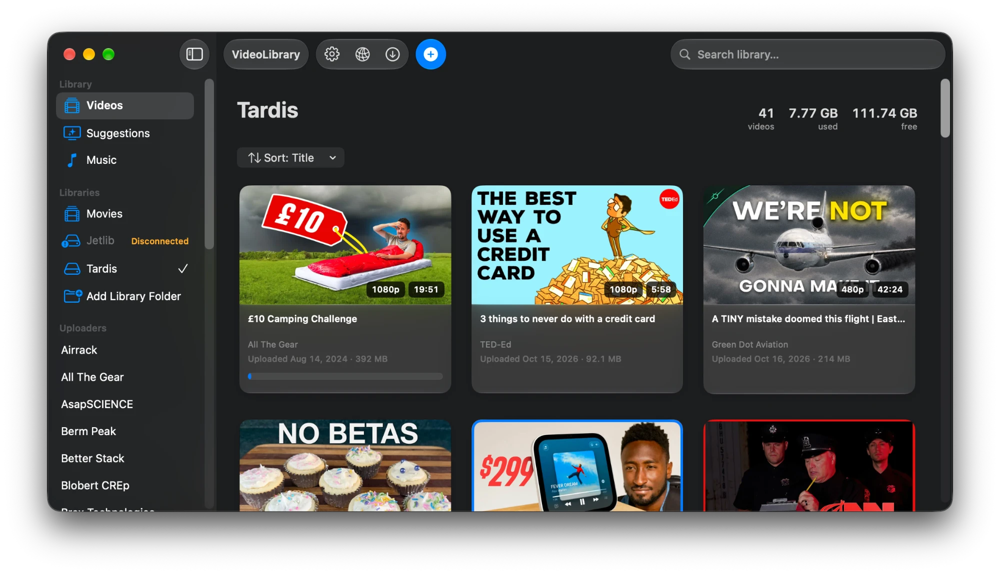
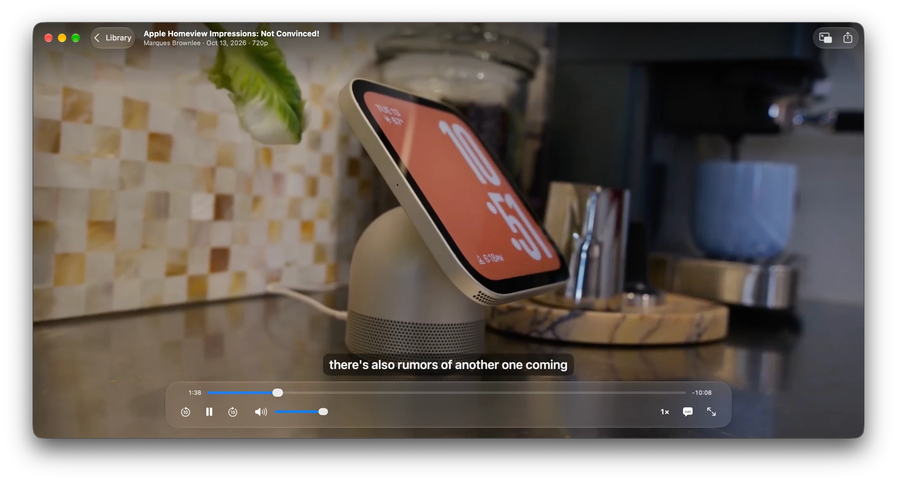
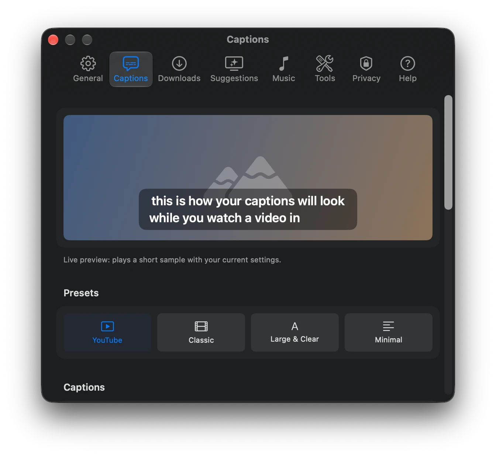
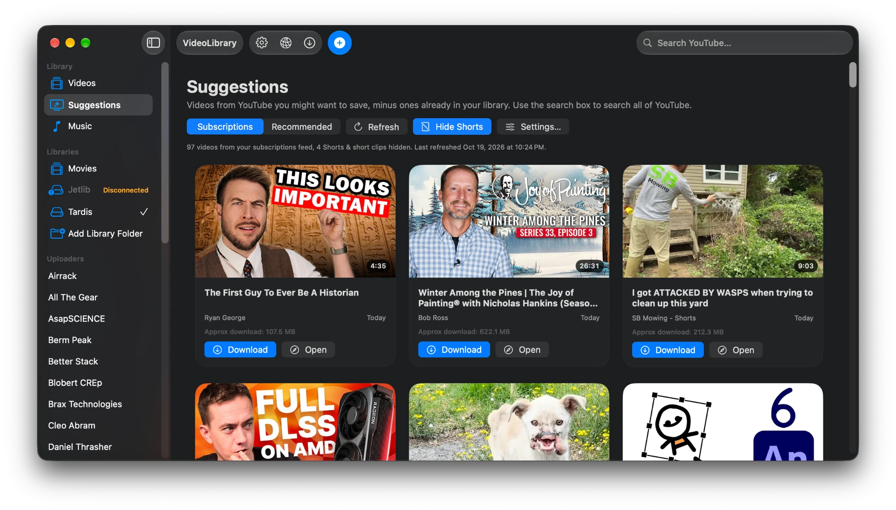
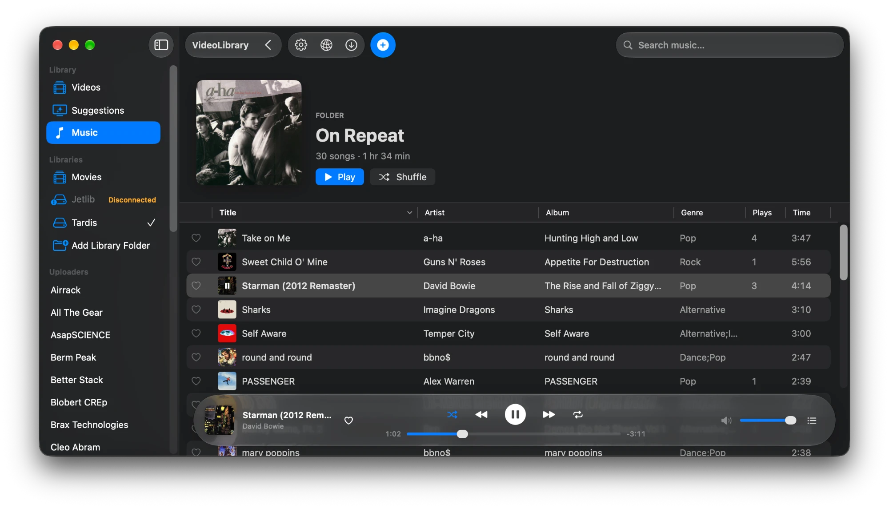
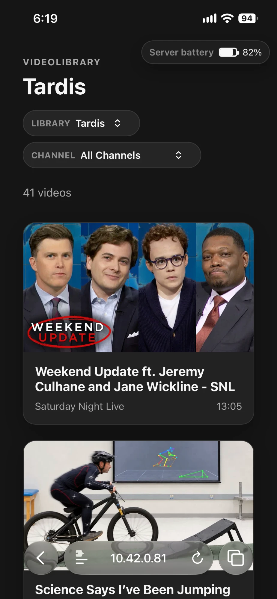

Download video once. Watch it anywhere, offline.
VideoLibrary is a native SwiftUI app built on yt-dlp. Paste a link from YouTube, Nebula or 1,000+ other sites; it saves an MP4 to a folder you choose and plays it with word-timed captions.

- 1,000+
- Sites supported through yt-dlp
- 480p–4K
- Resolution you choose per download
- AES-GCM
- Encryption for saved sign-ins
- 0
- Accounts, servers or analytics
Everything yt-dlp can do, without the terminal.
Downloads, libraries and playback live in one app that stores its index next to your videos, so a library on an external drive works on any Mac you plug it into.
Any site yt-dlp supports
YouTube, Nebula, Vimeo and more. The title appears as soon as yt-dlp picks formats, before captions and thumbnails finish.
Readable errors with a fix
Failures map to a plain explanation and one action: sign in, update yt-dlp or retry. Raw output stays out of the way.
HD by default
Downloads run signed out first, avoiding YouTube's 360p-only response for some accounts. 360p files get a Re-download in HD action that keeps watch progress.
Libraries on any drive
Each library is a folder with its own index. Disconnected drives stay listed and reappear when mounted; videos move between libraries in one step.
Import local files
Add recordings and clips you already have. The file name becomes the title and an early frame the thumbnail. Copy into the library or link in place.
Tools stay current
yt-dlp, ffmpeg and Deno are your Homebrew installs, not bundled copies. Settings shows their versions and updates them in place.
The video fills the window. Controls appear only while you move the pointer.
An AVFoundation player with its own transport bar. Captions sit above the controls, so the two never overlap.
- Fit window to video, then restore the previous size on exit
- Picture in Picture and an in-app miniplayer while browsing
- Frame stepping with , and . at the track's frame rate
- 0.5× to 2× speed, 5 s and 10 s skips
- Resume from the last position, per video

Auto-captions shown word by word, two stable lines at a time.
YouTube's automatic captions repeat each line as they roll. VideoLibrary reads the per-word timestamps and reveals words as they are spoken, without resizing the caption box.
- Background: one box, a box per line, outline or none
- Type: size, font, weight, color and opacity
- Timing: held through pauses of up to 1.5 s, so the box doesn't flicker
- Presets with a live preview in Settings

Your YouTube Subscriptions or Home feed, one click from your library.
The feed is read through yt-dlp with your own sign-in, so no Google Cloud project is needed. The YouTube Data API is available as an optional fallback.
- Search YouTube from the toolbar
- Hide Shorts and clips under a length you set
- Size estimate for your chosen resolution before downloading

An optional music player for folders of audio files.
Off by default. Turn it on per library or once for the whole app. Tags and cover art are read with AVFoundation; files are never moved or modified.
- Songs, Albums, Artists, Playlists; each folder is also a playlist
- Liked Songs, Recently Played and Most Played
- Play Next, Add to Queue and a reorderable Up Next
- Media keys and Control Center; the queue is restored on relaunch

Watch your library on your phone, streamed from your Mac.
Turn on sharing and scan the QR code. Your phone opens the library in its browser, with no app to install, and videos stream straight from your Mac over your own network.
- Every library, filtered by channel, with titles and lengths
- Seek anywhere: videos stream with byte-range requests, so nothing downloads in full first
- Captions in the same style as the app
- Server battery on the page, so you know when the Mac needs charging
- Private: the link carries a random access token

Sign-ins are encrypted. Nothing leaves your network.
VideoLibrary only connects to the sites you download from. There is no account, telemetry or update server.
Credential storage
Cookies and tokens are sealed with AES-GCM using a key held in the macOS Keychain. yt-dlp gets a decrypted cookie file in a private temporary folder for each run, removed when the run ends. Plaintext left by earlier versions is migrated on launch, and the debug log redacts tokens before writing.
- Import a sign-in from Safari, Chrome, Arc, Dia, Brave, Edge, Firefox and others, per profile
- YouTube and Nebula are stored separately; importing one never replaces the other
Wi-Fi sharing
Optional. Serves your library to a browser on the same network, with captions as WebVTT. Open it on your phone by scanning a QR code.
- Random 12-character access token, compared in constant time
- An address is locked out after 20 wrong attempts
- The OAuth callback server listens on loopback only
Keyboard shortcuts
The player uses the same keys as most video sites.
Install
Requires macOS 26 or later on Apple silicon, and Homebrew for the download tools.
Download
Get VideoLibrary.zip, unzip it and move the app to Applications.
Allow it to open
The app is not notarized. On first launch, open System Settings › Privacy & Security and choose Open Anyway.
Install the tools
Use Settings › Tools, or run:
brew install yt-dlp ffmpeg deno
Add a video
Click + and paste a link, or pick one from Suggestions.
VideoLibrary 26.10.1
Source, release notes and build history are on GitHub.